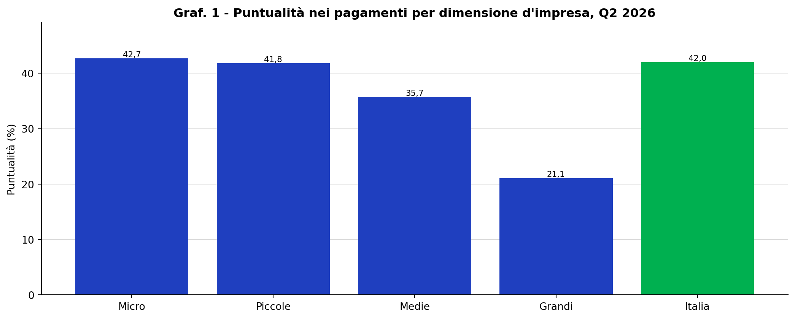
Figura 1: Percentuale di puntualità nei pagamenti dei committenti alla scadenza contrattuale, per dimensione d’impresa. Secondo trimestre 2026.
La puntualità della PA italiana e il peso dei debiti commerciali nel confronto europeo
Paolo Volterra ![]()
La puntualità nei pagamenti tra imprese private italiane è scesa al 42 per cento delle transazioni nel secondo trimestre 2026, mentre la pubblica amministrazione ha ridotto i tempi medi di pagamento delle fatture. Il debito commerciale della PA, tuttavia, continua a crescere e nel 2025 raggiunge 64,2 miliardi di euro, pari al 2,8 per cento del PIL: il valore più alto tra i ventisette paesi dell’Unione europea. Il documento ricostruisce le tabelle e i grafici della nota dell’Ufficio Studi CGIA Mestre del 12 settembre 2026 e li estende con un’analisi sistematica del dataset Eurostat sui debiti commerciali e sul debito pubblico. Per ogni figura sono illustrati la costruzione del dato, il confronto internazionale e le implicazioni per la liquidità delle imprese fornitrici.
pagamenti PA, debiti commerciali, Cribis, Eurostat, CGIA Mestre, debito pubblico, tempi di pagamento
La nota dell’Ufficio Studi CGIA Mestre del 12 settembre 2026 mette a confronto due andamenti opposti [1]. Da un lato la pubblica amministrazione ha ridotto i tempi di pagamento delle proprie fatture; dall’altro il debito commerciale accumulato continua a crescere, e i ritardi tra imprese private si allargano. Il punto di partenza è un dato Cribis riferito al secondo trimestre 2026: nei rapporti tra imprese private solo il 42 per cento delle transazioni commerciali è regolato alla scadenza contrattuale, due punti in meno rispetto allo stesso periodo dell’anno precedente.
Il debito commerciale della pubblica amministrazione è ricostruito nel documento con i dati Eurostat, disponibili nel dataset Government deficit/surplus, debt and associated data per la voce “trade credits and advances – liabilities” (codice AF.81L) [2]. Nel 2025 lo stock italiano ammonta a 64,2 miliardi di euro, equivalenti al 2,8 per cento del PIL: nessun altro paese dell’Unione europea registra un valore superiore. Il documento ricostruisce le figure della nota e le estende con il pannello Eurostat completo, che copre il periodo 1995–2025.
Il primo blocco di analisi riguarda le abitudini di pagamento dei committenti privati, per dimensione d’impresa e per territorio. I dati provengono dallo Studio pagamenti Italia di Cribis, aggiornato a giugno 2026, e sono ripresi integralmente dalla nota CGIA.

Figura 1: Percentuale di puntualità nei pagamenti dei committenti alla scadenza contrattuale, per dimensione d’impresa. Secondo trimestre 2026.
Il grafico mostra una relazione inversa tra dimensione del committente e rispetto delle scadenze. Le micro imprese pagano puntualmente nel 42,7 per cento dei casi, le piccole nel 41,8 e le medie nel 35,7. Le grandi imprese si fermano al 21,1 per cento: in poco più di un caso su cinque onorano l’impegno entro il termine contrattuale. La media nazionale è del 42 per cento. La distanza tra grandi e micro imprese, superiore a venti punti percentuali, è coerente con la lettura della dilazione di pagamento come leva di finanziamento a costo zero a vantaggio del committente più forte.
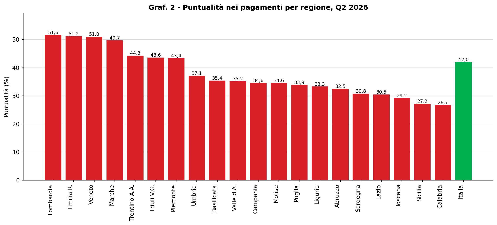
Figura 2: Transazioni commerciali tra imprese private: puntualità alla scadenza per regione. Secondo trimestre 2026.
La geografia della puntualità separa nettamente il Nord dal resto del paese. La Lombardia guida la classifica con il 51,6 per cento, seguita da Emilia-Romagna (51,2), Veneto (51,0) e Marche (49,7). Il Trentino-Alto Adige e il Friuli Venezia Giulia si collocano poco sopra il 43 per cento. In coda si trovano la Toscana (29,2), la Sicilia (27,2) e la Calabria (26,7). Il divario tra la prima e l’ultima regione supera quindi i ventiquattro punti percentuali, a conferma di una differenza strutturale nelle pratiche di pagamento lungo la penisola.
| Rank | Provincia più virtuosa | Rank | Provincia meno virtuosa | |
|---|---|---|---|---|
| 0 | 1 | Sondrio | 101 | Crotone |
| 1 | 2 | Bergamo | 102 | Agrigento |
| 2 | 3 | Belluno | 103 | Cosenza |
| 3 | 4 | Lecco | 104 | Reggio Calabria |
| 4 | 5 | Brescia | 105 | Messina |
| 5 | 6 | Forlì Cesena | 106 | Palermo |
| 6 | 7 | Padova | 107 | Trapani |
| 7 | 8 | Reggio Emilia | 108 | Caltanissetta |
| 8 | 9 | Mantova | 109 | Catanzaro |
| 9 | 10 | Vicenza | 110 | Siracusa |
Tabella 1: Rispetto della scadenza nei pagamenti tra imprese private: prime dieci e ultime dieci province. Secondo trimestre 2026.
A livello provinciale il confronto conferma il vantaggio delle aree settentrionali. Sondrio, Bergamo, Belluno e Lecco occupano le prime quattro posizioni, mentre le ultime sono appannaggio di Trapani, Caltanissetta, Catanzaro e Siracusa. La tabella riporta le dieci province migliori e le dieci peggiori, con il rispettivo rango nazionale su 110 province considerate.
Le analisi di questa sezione si basano sul dataset Eurostat dei debiti commerciali della pubblica amministrazione, voce AF.81L del settore “amministrazioni pubbliche” (S13) [2]. I valori sono espressi in milioni di euro e in percentuale del PIL.
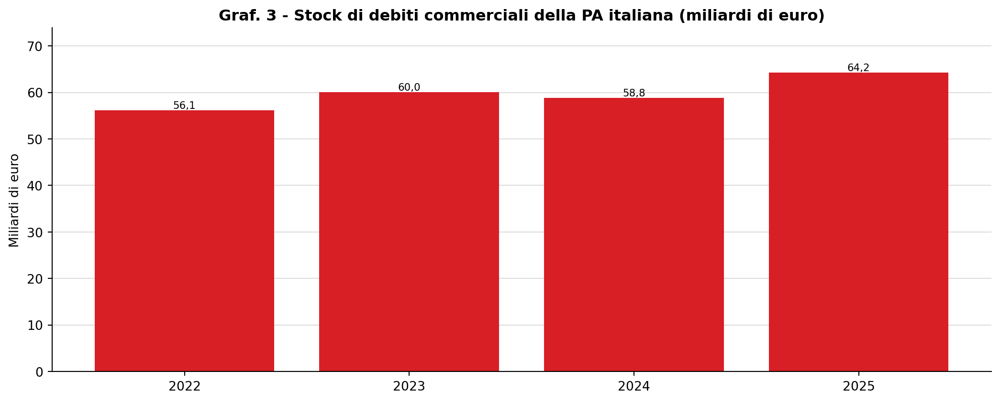
Figura 3: Stock di debiti commerciali di parte corrente della pubblica amministrazione italiana, 2022-2025 (miliardi di euro).
Lo stock di debiti commerciali della pubblica amministrazione italiana passa da 56,1 miliardi nel 2022 a 60,0 nel 2023, scende a 58,8 nel 2024 e risale a 64,2 miliardi nel 2025. L’aumento dell’ultimo anno è di circa 5,4 miliardi, il valore più elevato del quadriennio. La serie disponibile per l’Italia in questa voce decorre dal 2022: il confronto di lungo periodo non è quindi possibile con questo indicatore, ma lo è con il debito pubblico complessivo, analizzato nella sezione seguente.
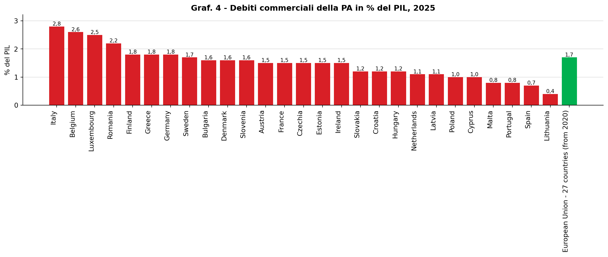
Figura 4: Debiti commerciali della pubblica amministrazione in percentuale del PIL, 2025.
Nel 2025 l’Italia presenta il rapporto più alto d’Europa, 2,8 per cento del PIL, seguita da Belgio (2,6) e Lussemburgo (2,5). La Romania si attesta al 2,2, mentre Germania, Grecia e Finlandia si collocano all’1,8. In fondo alla graduatoria figurano Spagna (0,7) e Lituania (0,4). La media dell’Unione europea è dell’1,6 per cento: il valore italiano è quindi quasi il doppio della media. È utile osservare che il dato Eurostat più aggiornato per il complesso dell’Unione è pari all’1,7 per cento, leggermente superiore all’1,6 indicato nella nota CGIA: la differenza riflette la revisione della notifica EDP e non modifica la posizione italiana.
| unit_code | rank | Paesi UE | Debito commerciale 2025 (milioni di euro) | Incidenza su PIL 2025 (%) |
|---|---|---|---|---|
| 0 | 1 | Italy | 64232.9 | 2.8 |
| 1 | 2 | Belgium | 16878.9 | 2.6 |
| 2 | 3 | Luxembourg | 2265.6 | 2.5 |
| 3 | 4 | Romania | 8192.2 | 2.2 |
| 4 | 5 | Finland | 4920.0 | 1.8 |
| 5 | 5 | Greece | 4513.0 | 1.8 |
| 6 | 5 | Germany | 78313.2 | 1.8 |
| 7 | 8 | Sweden | 10375.6 | 1.7 |
| 8 | 9 | Bulgaria | 1825.5 | 1.6 |
| 9 | 9 | Denmark | 6367.0 | 1.6 |
| 10 | 9 | Slovenia | 1150.9 | 1.6 |
| 11 | 12 | Austria | 7927.1 | 1.5 |
| 12 | 12 | France | 45592.2 | 1.5 |
| 13 | 12 | Czechia | 5354.0 | 1.5 |
| 14 | 12 | Estonia | 604.5 | 1.5 |
| 15 | 12 | Ireland | 9283.0 | 1.5 |
| 16 | 17 | Slovakia | 1583.1 | 1.2 |
| 17 | 17 | Croatia | 1111.1 | 1.2 |
| 18 | 17 | Hungary | 2729.5 | 1.2 |
| 19 | 20 | Netherlands | 13553.0 | 1.1 |
| 20 | 20 | Latvia | 461.3 | 1.1 |
| 21 | 22 | Poland | 9670.2 | 1.0 |
| 22 | 22 | Cyprus | 375.8 | 1.0 |
| 23 | 24 | Malta | 203.7 | 0.8 |
| 24 | 24 | Portugal | 2462.9 | 0.8 |
| 25 | 26 | Spain | 11915.7 | 0.7 |
| 26 | 27 | Lithuania | 361.1 | 0.4 |
| 27 | <NA> | Euro area – 20 countries (2023-2025) | 267709.0 | 1.7 |
| 28 | <NA> | European Union - 27 countries (from 2020) | 312223.1 | 1.7 |
Tabella 2: Debiti commerciali della pubblica amministrazione per paese dell’Unione europea, 2025.
La tabella ordina i ventisette paesi per incidenza sul PIL e riporta, per ciascuno, lo stock in milioni di euro. L’Italia cumula un debito commerciale di 64.233 milioni, quasi quattro volte quello belga (16.879 milioni) e oltre tre volte quello tedesco (78.313 milioni, ma su un PIL molto più grande). Il peso relativo, non il valore assoluto, è ciò che colloca l’Italia in testa alla graduatoria europea.
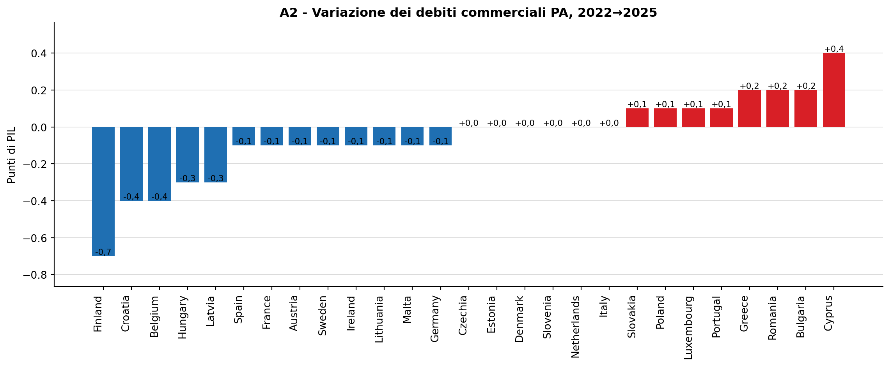
Figura 5: Variazione dei debiti commerciali della PA tra 2022 e 2025, in punti percentuali di PIL.
La dinamica del triennio mostra come il fenomeno non sia uniforme. Cipro (+0,4 punti di PIL), Bulgaria, Romania e Grecia (tutte +0,2) registrano gli aumenti maggiori, mentre Finlandia (−0,7), Croazia e Belgio (−0,4) riducono il proprio rapporto. L’Italia resta sostanzialmente stabile sul valore elevato di partenza, passando dal 2,8 per cento del 2022 al 2,8 del 2025, dopo il temporaneo assestamento al 2,7 del 2024.
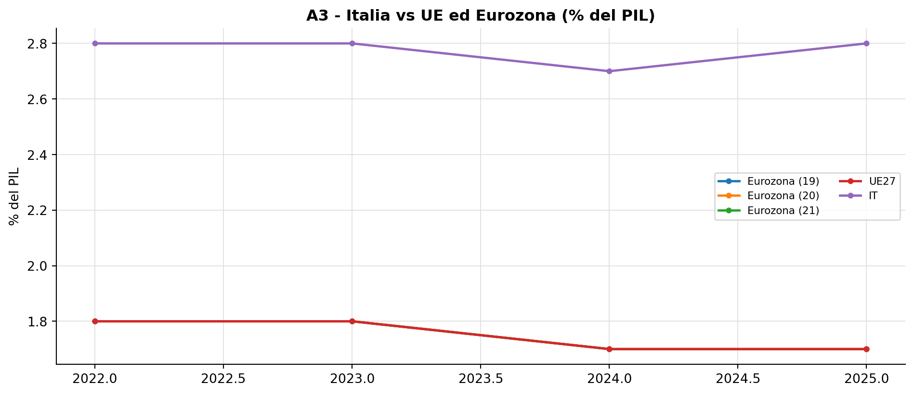
Figura 6: Debiti commerciali della PA in percentuale del PIL: Italia e aggregati europei, 2022-2025.
Il confronto con gli aggregati rende immediata la dimensione del divario. Nel 2025 l’Italia si colloca al 2,8 per cento del PIL, mentre l’Unione europea a ventisette paesi e le diverse configurazioni dell’Eurozona si attestano tra l’1,7 e l’1,8. Lo scarto è quindi di circa un punto di PIL, pari a oltre venti miliardi di euro. Il divario si mantiene stabile nei quattro anni osservati, senza segnali di convergenza verso la media.
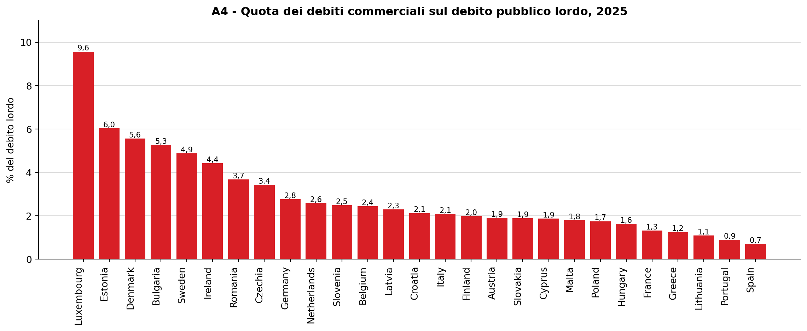
Figura 7: Quota dei debiti commerciali sul debito pubblico lordo, 2025.
Rapportare i debiti commerciali al debito pubblico complessivo chiarisce quale parte dell’esposizione dello Stato verso i fornitori pesa sul totale. Il Lussemburgo registra la quota più alta (9,6 per cento), seguito da Estonia (6,0), Danimarca (5,6) e Bulgaria (5,3). L’Italia si colloca poco sotto il 2,1 per cento, un valore contenuto in termini relativi perché il suo debito pubblico è molto ampio; ciò non riduce tuttavia l’impatto sui fornitori, che dipende dal valore assoluto delle somme non pagate e dai tempi di attesa.
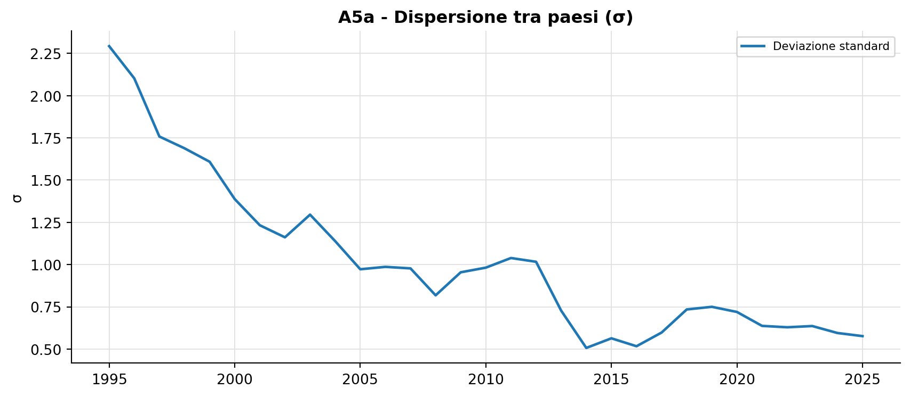
Figura 8: Dispersione tra paesi del rapporto debiti commerciali/PIL (deviazione standard), 2022-2025.
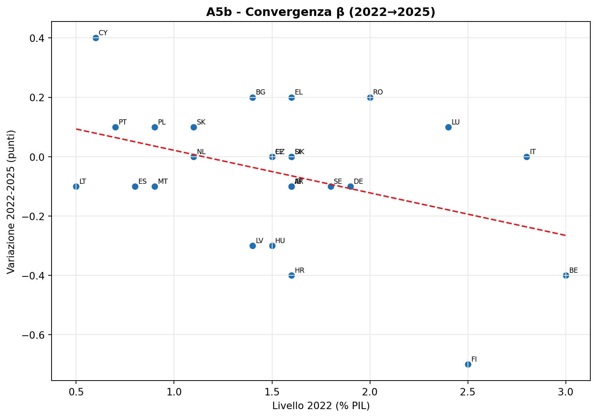
Figura 9: Convergenza β: livello 2022 e variazione 2022-2025 dei debiti commerciali in percentuale di PIL.
I due grafici valutano la convergenza tra i paesi dell’Unione. La dispersione del rapporto debiti commerciali/PIL, misurata dalla deviazione standard, scende da 0,72 nel 2020 a 0,58 nel 2025, con una riduzione continua a partire dal 2021: i paesi stanno quindi diventando più simili tra loro. Il secondo grafico stima la convergenza β regredendo la variazione 2022-2025 sul livello iniziale del 2022. La pendenza è −0,14: i paesi che partivano da un rapporto più alto tendono a ridurlo più rapidamente, mentre quelli che partivano da valori bassi lo aumentano. La combinazione dei due risultati indica una convergenza verso l’alto, trainata dai paesi con debiti commerciali contenuti.
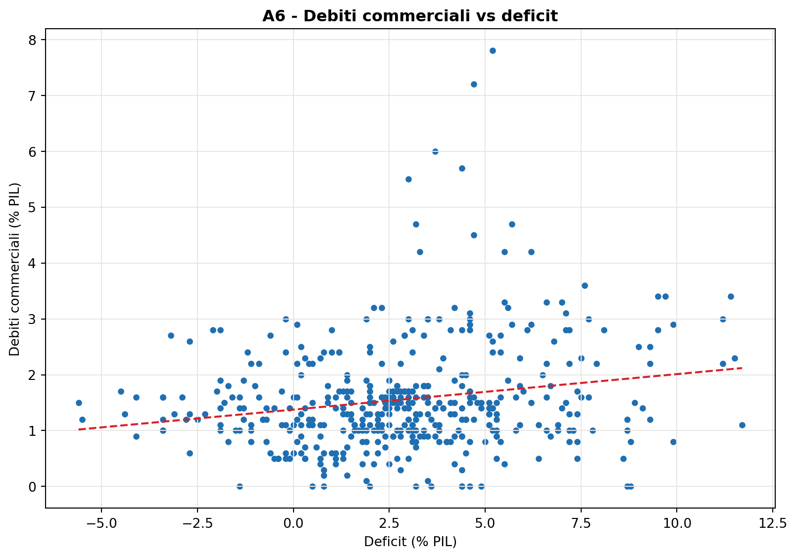
Figura 10: Relazione tra indebitamento netto delle amministrazioni pubbliche e debiti commerciali, tutte le osservazioni 1995-2025.
Il grafico mette in relazione il rapporto debiti commerciali/PIL con il deficit pubblico di tutti i paesi e gli anni disponibili. La nuvola di punti è dispersa e la correlazione è pari a +0,20: esiste un legame positivo, ma debole, tra disavanzo e debiti commerciali. Il risultato suggerisce che il ritardo nei pagamenti non dipende soltanto dalla condizione di bilancio del paese; vi concorrono fattori organizzativi e di procedure di spesa che non si riflettono direttamente nel saldo di bilancio.
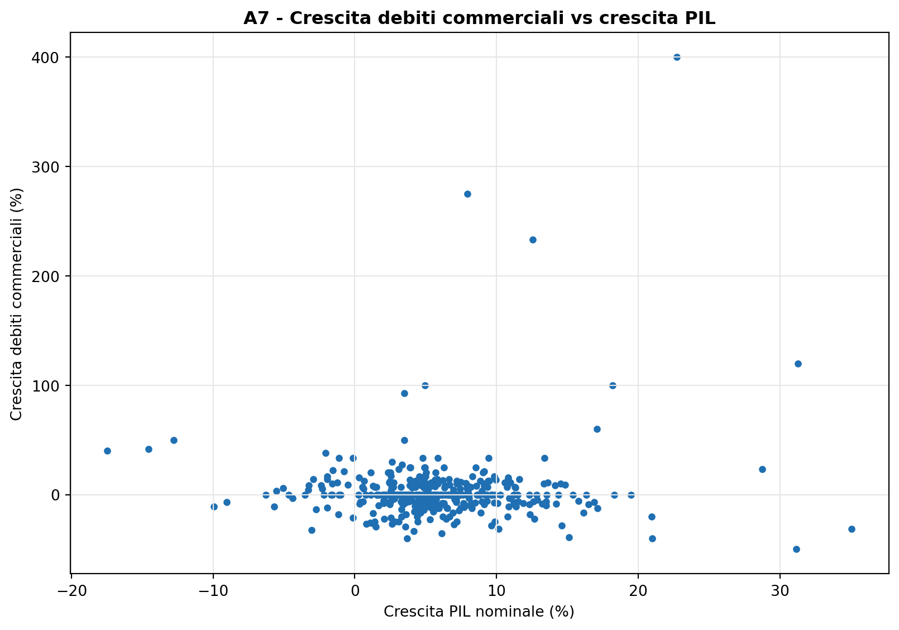
Figura 11: Relazione tra crescita del PIL nominale e crescita dei debiti commerciali.
Questo grafico verifica se i debiti commerciali crescano di più nei paesi con economie in espansione. La correlazione è +0,10, praticamente nulla: la dinamica dei debiti commerciali non segue quella del ciclo economico. Le variazioni annuali sono molto disperse, con diversi paesi che registrano contrazioni dei debiti commerciali anche in presenza di crescita del PIL nominale.
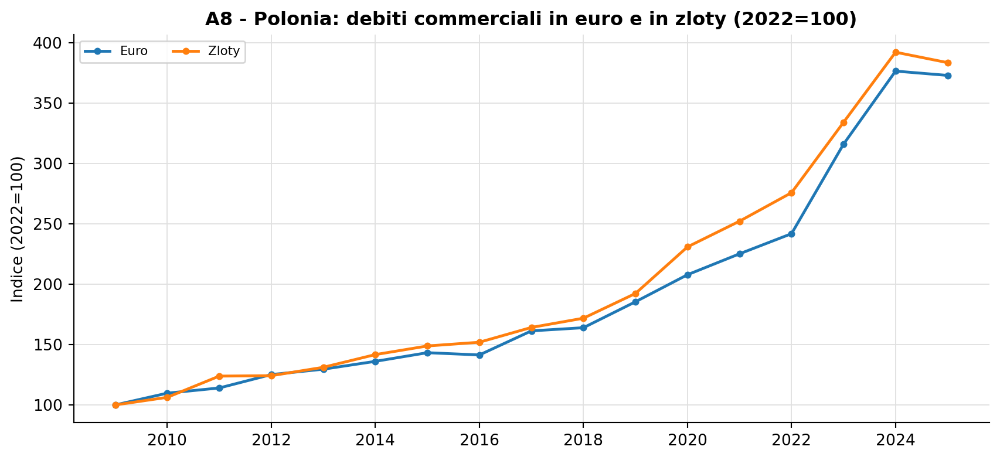
Figura 12: Debiti commerciali della PA in Polonia, valori in euro e in zloty, indice 2022=100.
Per i paesi fuori dall’area dell’euro il confronto in euro incorpora l’effetto del tasso di cambio. Il caso polacco lo mostra in modo netto: misurato in zloty, il debito commerciale della pubblica amministrazione cresce in modo diverso rispetto alla stessa grandezza espressa in euro. La lettura in valuta nazionale, disponibile nel dataset, isola la dinamica reale dell’esposizione dall’effetto di conversione e va preferita quando si analizza un singolo paese non appartenente all’area dell’euro.
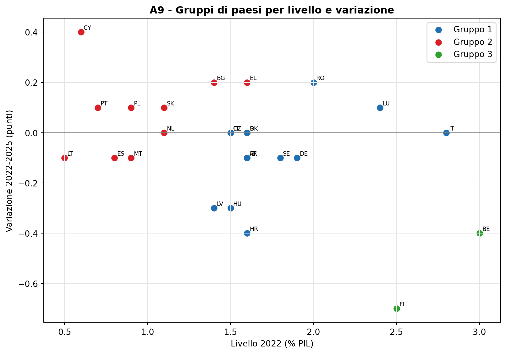
Figura 13: Raggruppamento dei paesi per livello 2022 e variazione 2022-2025 dei debiti commerciali.
L’algoritmo di raggruppamento (k-means su livello iniziale e variazione, standardizzati) individua tre profili. Il primo raccoglie i paesi con debiti commerciali contenuti e variazione modesta, tra cui Paesi Bassi, Portogallo, Malta e Spagna. Il secondo riunisce i paesi in riduzione da livelli intermedi, come Croazia, Ungheria, Lettonia e Belgio. Il terzo comprende la maggioranza dei paesi, incluso l’Italia, caratterizzati da livelli prossimi o superiori all’1,5 per cento e variazione piccola. Il raggruppamento conferma che la posizione italiana è anomala per livello, non per dinamica.
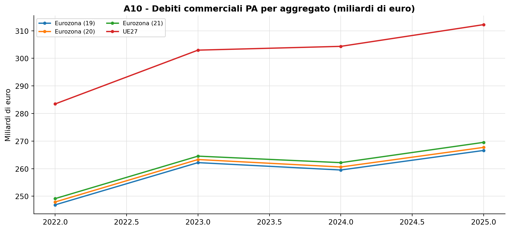
Figura 14: Debiti commerciali della PA per aggregato europeo, 2022-2025 (miliardi di euro).
In valore assoluto i debiti commerciali delle amministrazioni pubbliche europee superano i 300 miliardi di euro nell’Unione a ventisette e i 267 miliardi nell’Eurozona a venti. La componente italiana, pari a 64,2 miliardi, rappresenta circa un quinto del totale europeo. Il confronto tra le configurazioni dell’Eurozona (diciannove, venti e ventuno paesi) mostra come l’allargamento modifichi il totale di pochi miliardi, a conferma che il grosso dello stock è concentrato nei paesi fondatori.
Le figure di questa sezione utilizzano il debito pubblico lordo (voce GD) e l’indebitamento netto (voce B9) delle amministrazioni pubbliche, dal pannello Eurostat 1995-2025 [2]. L’obiettivo è collocare i debiti commerciali nel quadro più ampio dei conti pubblici.
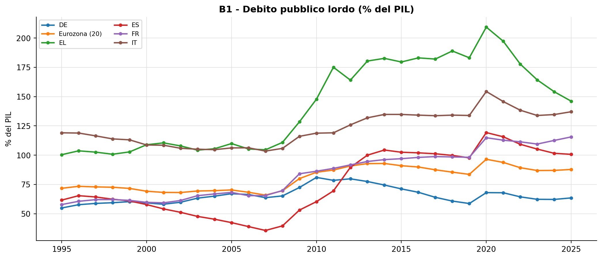
Figura 15: Debito pubblico lordo in percentuale del PIL: Italia, maggiori economie europee ed Eurozona, 1995-2025.
Il rapporto debito/PIL italiano, dopo la discesa dagli anni Novanta, risale con la crisi finanziaria e con la pandemia. Nel 2025 si attesta intorno al 137 per cento, il secondo valore più alto tra i grandi paesi europei dopo la Grecia, che supera il 146 per cento. Francia e Belgio si collocano poco sopra il 100 per cento, Spagna e Germania molto più in basso. La traiettoria italiana resta al di sopra della media dell’Eurozona per tutto il periodo osservato, con un divario che si amplia dopo il 2008 e non si richiude.
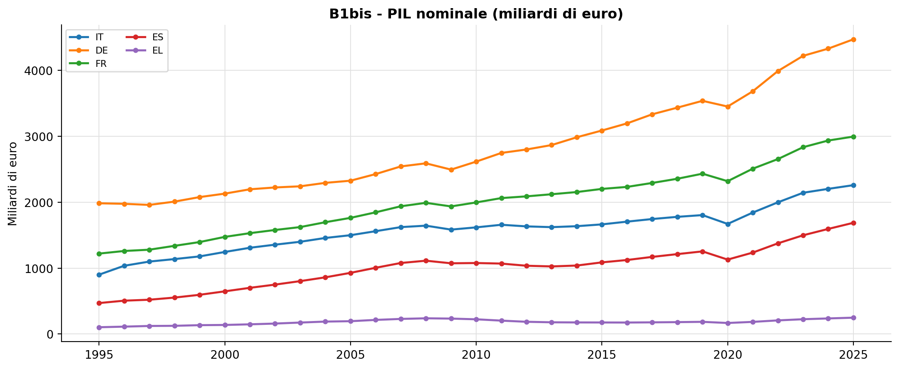
Figura 16: PIL nominale in miliardi di euro: Italia, Germania, Francia, Spagna e Grecia, 1995-2025.
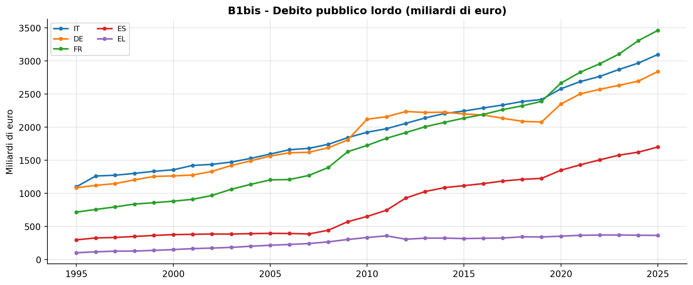
Figura 17: Debito pubblico lordo in miliardi di euro: Italia, Germania, Francia, Spagna e Grecia, 1995-2025.
I due grafici separano le due grandezze per mostrarne l’andamento individuale, senza ridurle a un rapporto. Il PIL nominale italiano passa da circa 1.000 a oltre 2.200 miliardi di euro tra il 1995 e il 2025, con una crescita più lenta di quella tedesca e francese. Il debito pubblico italiano cresce da poco più di 1.100 miliardi nel 1995 a oltre 3.000 nel 2025, superando il valore del PIL. La Germania, partita da un debito simile a quello italiano, cresce molto meno e si attesta intorno ai 2.800 miliardi. Il confronto in livelli assoluti mostra quindi che il problema italiano non è solo il rapporto, ma anche la velocità di accumulo del debito rispetto alla crescita dell’economia.
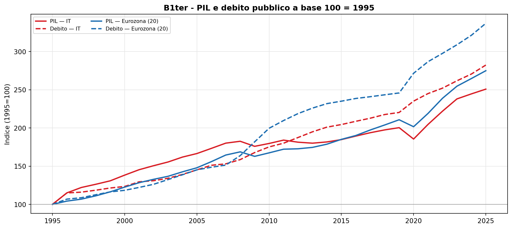
Figura 18: PIL e debito pubblico a base 100 = 1995: Italia ed Eurozona a venti paesi.
Portare le due serie a una base comune consente di confrontare le rispettive velocità di crescita prescindendo dai livelli. In Italia il PIL nel 2025 è circa 2,5 volte il valore del 1995, mentre il debito è 2,8 volte: il debito cresce più del prodotto. Il divario è ancora più marcato nell’Eurozona, dove il PIL si moltiplica per circa 2,75 e il debito per 3,35. La linea del debito italiano supera quella del PIL dal 2009 in poi, segnale di un’accumulazione che eccede la capacità di crescita nominale dell’economia.
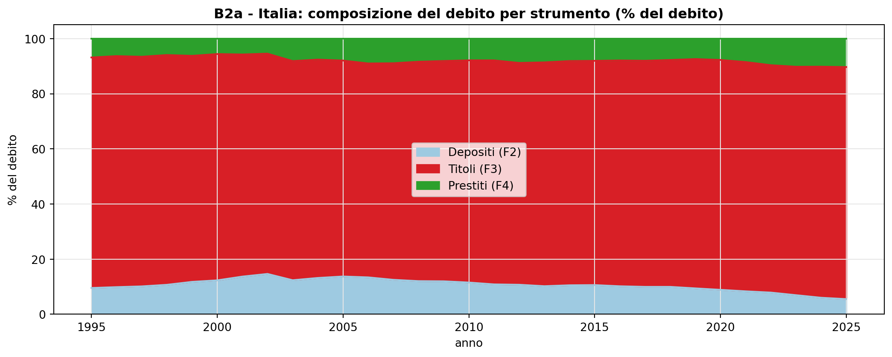
Figura 19: Italia: composizione del debito pubblico per strumento finanziario, 1995-2025.
La struttura per strumento è cambiata in modo netto in trent’anni. All’inizio del periodo i titoli di Stato rappresentavano una quota minoritaria del debito; progressivamente il loro peso è cresciuto fino a dominare la composizione. Nel 2025 i titoli (voce F3) valgono circa l’84 per cento del debito, i prestiti (F4) poco più del 10 e i depositi (F2) una frazione residuale. Questa composizione espone il debito italiano al rischio di rifinanziamento sui mercati, ma lo rende anche meno dipendente dal canale bancario.
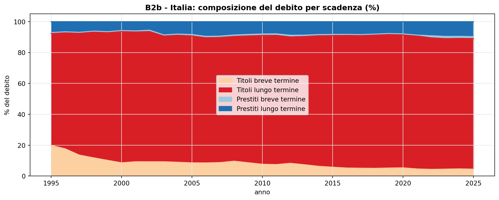
Figura 20: Italia: composizione del debito pubblico per scadenza, 1995-2025.
La composizione per scadenza conferma la prevalenza della parte a lungo termine. I titoli a lungo termine (voce F32) superano l’80 per cento del debito, mentre quelli a breve (F31) si fermano intorno al 4. I prestiti a lungo termine (F42) valgono circa il 9 per cento e quelli a breve (F41) poco più dell’1. La struttura per scadenza è quindi relativamente robusta: una quota contenuta del debito giunge a maturazione ogni anno, il che riduce il rischio di rollover di breve periodo ma comporta un onere per interessi che si adegua lentamente ai tassi di mercato.
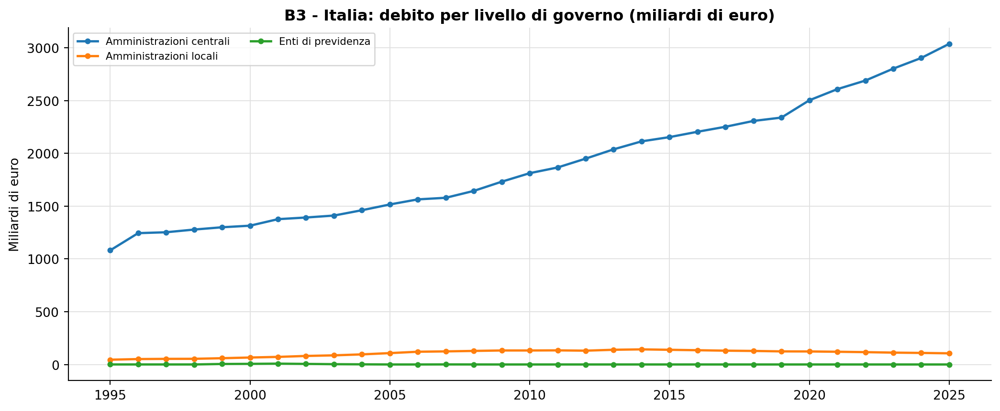
Figura 21: Italia: debito pubblico per livello di governo, 1995-2025 (miliardi di euro).
La ripartizione per livello di governo mostra una concentrazione quasi totale nel livello centrale. Le amministrazioni centrali detengono oltre 3.000 miliardi di euro di debito nel 2025, le amministrazioni locali circa 106 miliardi, gli enti di previdenza una quota trascurabile. Il debito italiano è quindi un debito dello Stato centrale: le eventuali criticità di pagamento dei fornitori da parte di comuni e regioni hanno un peso aggregato limitato nel quadro del debito complessivo.
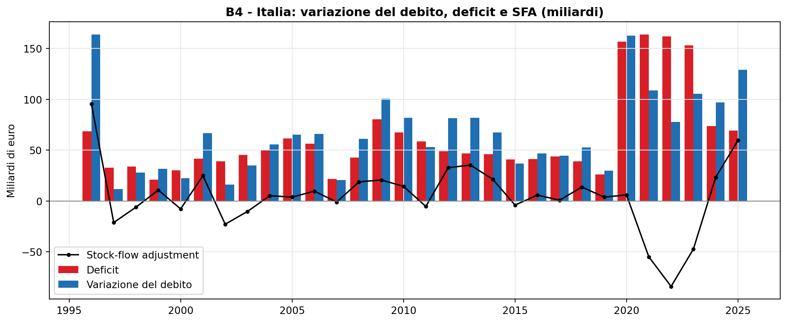
Figura 22: Italia: variazione del debito, deficit e stock-flow adjustment, 1996-2025 (miliardi di euro).
La variazione del debito non coincide con il disavanzo annuale: la differenza è lo stock-flow adjustment, che riflette operazioni finanziarie, riclassificazioni e rivalutazioni. In alcuni anni lo scostamento è consistente, come nel 2020, quando il debito è cresciuto di circa 21 miliardi in più del disavanzo per effetto della crisi pandemica e delle garanzie pubbliche. Negli ultimi anni lo stock-flow adjustment è tornato positivo ma contenuto. Il grafico ricorda che la lettura del solo saldo di bilancio non basta a spiegare la dinamica del debito.
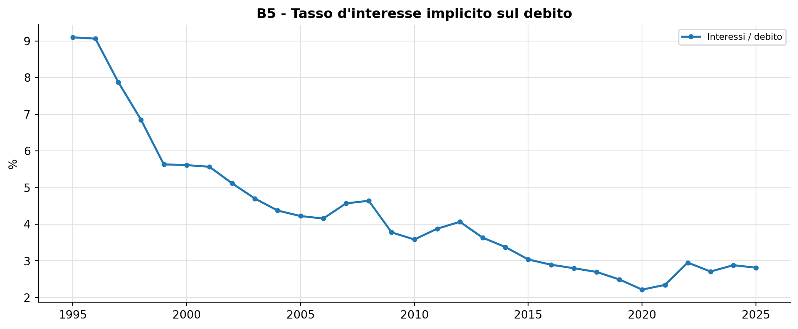
Figura 23: Italia: tasso d’interesse implicito sul debito pubblico, 1995-2025.
Il rapporto tra spesa per interessi e debito misura il costo medio effettivo del debito. Il tasso implicito italiano è sceso da oltre il 9 per cento nella seconda metà degli anni Novanta al 2,8 per cento del 2025, con un minimo intorno al 2,3 nel 2021. La discesa riflette il calo dei tassi di mercato e il progressivo rifinanziamento del debito a condizioni più favorevoli. Dopo il 2022 il tasso risale leggermente, in linea con il rialzo dei tassi, e il margine di risparmio sulla spesa per interessi si riduce.
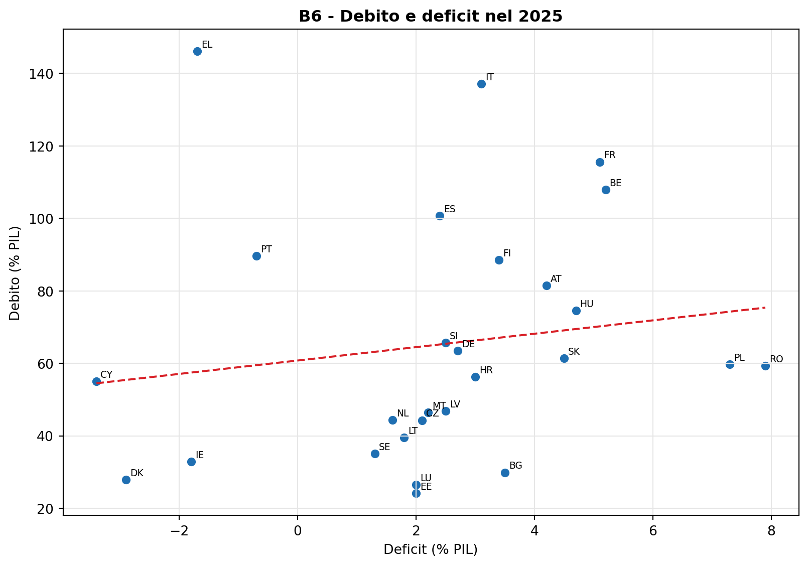
Figura 24: Italia e paesi UE: debito pubblico e indebitamento netto in percentuale del PIL, 2025.
Il grafico incrocia il livello del debito con il disavanzo annuo per il 2025. L’Italia si colloca nella parte alta, con un debito prossimo al 137 per cento e un deficit intorno al 3,1 per cento del PIL, vicino alla soglia del trattato. La Grecia registra il debito più elevato, oltre il 146, ma con un disavanzo più contenuto. La nuvola mostra una relazione debole: paesi con debiti alti possono avere deficit diversi, e il percorso di riduzione dipende più dalla crescita nominale e dall’avanzo primario che dal solo saldo complessivo.
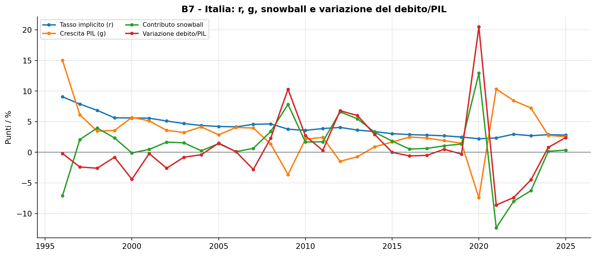
Figura 25: Italia: tasso implicito, crescita del PIL nominale, contributo dello snowball e variazione del rapporto debito/PIL, 1996-2025.
Il contributo dello snowball misura quanta parte della variazione del rapporto debito/PIL deriva dalla differenza tra il tasso d’interesse implicito e la crescita nominale dell’economia. Quando la crescita supera il tasso, come nel 2021-2023, il contributo è negativo e il rapporto debito/PIL scende anche a parità di saldo primario. Dal 2024 la crescita nominale rallenta al di sotto del tasso implicito e il contributo diventa positivo, contribuendo alla risalita del rapporto. Il grafico mostra anche quanto la variazione effettiva del rapporto si discosti dal solo effetto snowball, per la parte attribuibile a disavanzo primario e a operazioni straordinarie.
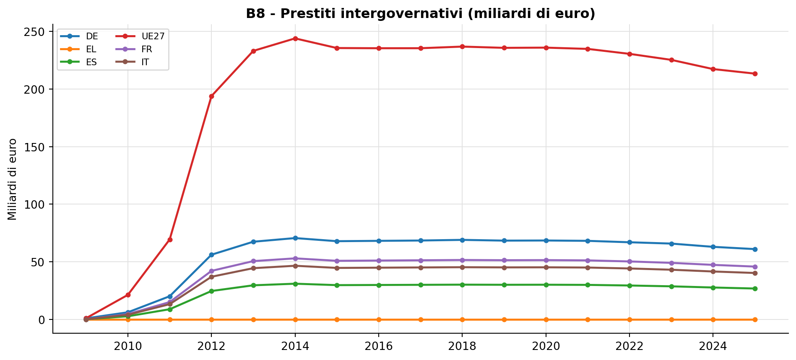
Figura 26: Prestiti intergovernativi (voce IGL_F4) nell’Unione europea, 2009-2025 (miliardi di euro).
I prestiti intergovernativi sono le passività tra amministrazioni pubbliche di paesi diversi, in larga parte legate ai programmi di assistenza finanziaria della crisi del debito sovrano. Per l’Italia il valore è modesto e in lenta riduzione, da circa 45 miliardi nel 2020 a 40 nel 2025. Il totale dell’Unione a ventisette è molto più grande e riflette i prestiti erogati ai paesi in programma. Questa voce mostra come la crisi del debito abbia lasciato un’eredità finanziaria tra Stati che si estingue gradualmente.
Il dataset trimestrale del debito pubblico consente di collocare i tempi di pagamento all’interno del ciclo di finanza pubblica [3].
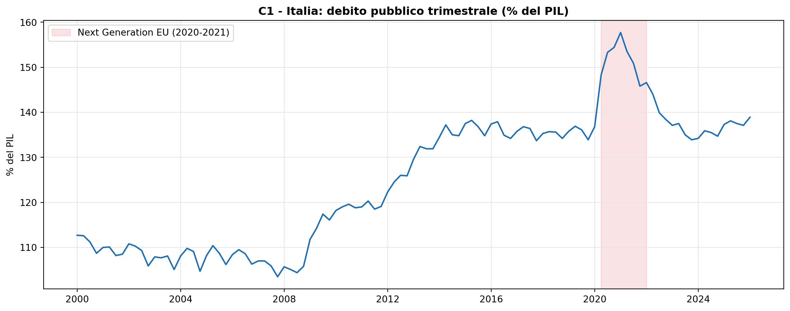
Figura 27: Italia: debito pubblico lordo trimestrale in percentuale del PIL, 1995-2026.
La serie trimestrale mostra il profilo del rapporto debito/PIL con maggiore dettaglio rispetto ai dati annuali. Il salto più ampio si registra nel 2020, in corrispondenza dell’avvio del programma Next Generation EU e delle misure di sostegno all’economia: la fascia evidenziata nel grafico individua la finestra 2020-2021. Dopo il picco, il rapporto scende gradualmente fino al 2023 e torna a risalire negli ultimi trimestri, chiudendo al 138,9 per cento nel primo trimestre 2026. Il dato trimestrale conferma che il miglioramento dei tempi di pagamento della pubblica amministrazione non si è tradotto in una riduzione duratura dello stock di debito.
Il debito commerciale della pubblica amministrazione ha un lato finanziario: le imprese che attendono il pagamento possono mobilizzare il credito presso banche e intermediari. Questa sezione ricostruisce il funzionamento di tali operazioni e la dimensione del mercato, con i dati della Ragioneria Generale dello Stato [4], di Assifact [5] e della Banca d’Italia [6].
Nel gergo bancario le operazioni autoliquidanti sono quelle il cui rimborso si produce con l’incasso del credito sottostante: anticipo su fatture, sconto, factoring pro solvendo. Il rimborso si chiude quando il debitore paga, senza una nuova delibera. Un credito verso la pubblica amministrazione non è però autoliquidante per natura: lo diventa soltanto se l’incasso è canalizzato alla banca e se la cessione è opponibile all’amministrazione debitrice.
Ne derivano tre configurazioni. Nella prima l’operazione è realmente autoliquidante: la cessione è notificata e, di norma, accettata dalla PA, e il pagamento è indirizzato a un conto anticipi dedicato con delega irrevocabile all’incasso. Nella seconda, la più diffusa, il factoring è pro solvendo: la banca anticipa, ma il cedente resta garante, cosicché il rischio non è trasferito. Nella terza l’operazione richiede un accoppiamento manuale tra fatture e mandati di pagamento: accade quando la cessione non è notificata, quando la PA paga al fornitore originario, quando operano compensazioni, scissione dei pagamenti ai fini IVA, pignoramenti o pagamenti parziali.
Il punto critico non è la solvibilità della pubblica amministrazione, che è bassa, ma l’incertezza dei tempi e l’opponibilità della cessione. La Piattaforma di Certificazione dei Crediti, gestita dalla Ragioneria Generale dello Stato, rende il credito certo, liquido ed esigibile e consente di automatizzare la riconciliazione altrimenti manuale.
Secondo il monitoraggio della Ragioneria Generale dello Stato, nel 2025 le amministrazioni registrate sono 22.277 e le fatture ricevute 30,8 milioni, per un importo dovuto di 216 miliardi di euro e pagamenti per 207,8 miliardi. Il tempo medio di pagamento scende a 27,2 giorni, con un anticipo medio di 16,1 giorni rispetto alla scadenza. Lo stock di debito commerciale al 31 dicembre 2025 è di 22,7 miliardi: 8,8 scaduti e 13,9 fisiologici, in calo dai 31,2 miliardi del 2018. Il perimetro della Piattaforma non coincide con quello del dato Eurostat discusso in precedenza: la prima misura le fatture commerciali da fatturazione elettronica, il secondo lo stock di passività AF.81L del settore pubblico secondo la contabilità nazionale, pari a 64,2 miliardi. I due valori non sono confrontabili direttamente.
Per Assifact, che rappresenta gli operatori del factoring, il 2025 si chiude con un turnover di 289,1 miliardi di euro, in crescita del 3,8 per cento al netto delle operazioni sui crediti fiscali edilizi. Il valore corrisponde a circa il 13 per cento del PIL. L’83 per cento dei volumi è realizzato pro soluto (239,9 miliardi) e il 17 per cento pro solvendo (49,2 miliardi): la formula senza ricorso prevale ormai stabilmente. Gli anticipi e i corrispettivi erogati ammontano a 59,8 miliardi. Il factoring verso la pubblica amministrazione vale 20,6 miliardi di turnover (7 per cento del totale) e 7,7 miliardi di montecrediti, di cui 3,1 scaduti e 1,7 scaduti da oltre un anno. I tempi di incasso confermano un andamento a due velocità: il DSO verso le imprese private è di 78,7 giorni e cala del 3,2 per cento, mentre quello verso la pubblica amministrazione è di 138,4 giorni e aumenta di 7,8 giorni, quasi il 6 per cento.
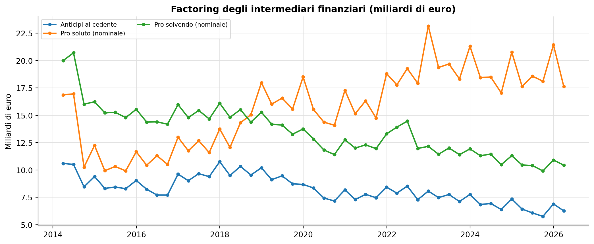
Figura 28: Italia: factoring degli intermediari finanziari — anticipi al cedente e valore nominale dei crediti acquisiti pro soluto e pro solvendo, 2014-2026 (miliardi di euro).
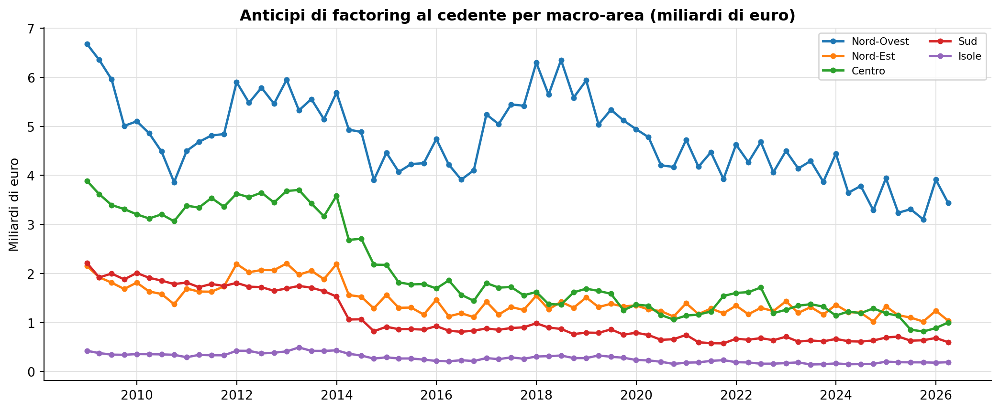
Figura 29: Italia: anticipi di factoring al cedente per macro-area, 2014-2026 (miliardi di euro).
La Banca d’Italia distingue, nelle segnalazioni di vigilanza degli intermediari finanziari, tre grandezze del factoring [7], [8]. Le anticipazioni al cedente sono l’esposizione autoliquidante vera e propria: l’intermediario eroga liquidità al fornitore in attesa dell’incasso. Il valore nominale dei crediti acquisiti pro soluto e quello pro solvendo misurano invece il portafoglio di crediti acquistati, rispettivamente senza e con il ricorso verso il cedente.
Nel primo trimestre 2026 le anticipazioni al cedente valgono 6,3 miliardi di euro, in calo dai 10,6 miliardi del 2014 e dai 9,4 del 2018. I crediti acquisiti pro soluto ammontano a 17,6 miliardi e quelli pro solvendo a 10,4 miliardi. La composizione conferma la prevalenza della formula senza ricorso: il portafoglio pro soluto è quasi il doppio di quello pro solvendo, e la quota autoliquidante in senso stretto è la più contenuta. Questa struttura è coerente con il ruolo delle società di factoring come acquirenti di crediti, più che come semplici anticipatrici di fatture.
La distribuzione territoriale delle anticipazioni al cedente riflette la geografia produttiva. Nel primo trimestre 2026 il Nord-Ovest raccoglie 3,4 miliardi su 6,3 nazionali, il Nord-Est e il Centro circa un miliardo ciascuno, il Sud 0,6 e le Isole 0,2. La concentrazione settentrionale è coerente con la localizzazione dei grandi committenti e delle principali società di factoring.
Per completezza, gli impieghi per forma tecnica includono anche i conti correnti attivi, la voce che raccoglie in larga parte gli anticipi su fatture: nel primo trimestre 2026 valgono oltre 220 miliardi di euro e presentano una marcata stagionalità di fine anno. Il factoring è quindi una componente contenuta del credito per capitale circolante; la parte prevalente del finanziamento a breve delle imprese passa per gli anticipi in conto corrente.
La banca che acquista crediti verso la pubblica amministrazione combina tre leve: il prezzo, il capitale e il presidio dell’incasso. Il prezzo incorpora i giorni medi di pagamento attesi; il DSO B2PA di 138 giorni è il parametro di riferimento del costo implicito dello sconto. Il capitale assorbito si riduce con il factoring pro soluto, con la garanzia del Fondo Centrale di Garanzia per le PMI e con la cartolarizzazione di portafogli tramite veicoli dedicati. Il presidio dell’incasso distingue l’operazione autoliquidante da quella con ricorso: cessione notificata, conto dedicato e riconciliazione automatica da un lato; garanzia del cedente e gestione manuale dall’altro.
Su questo mercato si sono affermate due famiglie di soluzioni. Il reverse factoring e il confirming spostano l’iniziativa sul debitore forte: il committente riconosce i crediti ceduti dai fornitori e ne agevola lo smobilizzo, con riconciliazione automatica basata sulla fatturazione elettronica. Nel 2025 il reverse factoring si ridimensiona e cresce il confirming, a conferma di un’evoluzione nelle modalità operative. Il factoring tradizionale, prevalentemente pro soluto, resta il canale principale per i fornitori della pubblica amministrazione, per i quali il problema non è l’insolvenza del debitore ma la durata e la prevedibilità dei tempi di incasso.
Le figure ricostruite e le analisi estese indicano quattro risultati principali.
Primo, la puntualità nei pagamenti tra imprese private si è ridotta al 42 per cento nel secondo trimestre 2026 e resta fortemente disomogenea sul territorio, con un divario di oltre venti punti tra le regioni settentrionali e quelle meridionali.
Secondo, il debito commerciale della pubblica amministrazione italiana, pari a 64,2 miliardi nel 2025, è il più alto d’Europa in rapporto al PIL (2,8 per cento), quasi il doppio della media dell’Unione.
Terzo, il raffronto con il debito pubblico mostra che i debiti commerciali rappresentano una quota contenuta del totale, ma il debito complessivo cresce più del PIL e il contributo dello snowball è tornato positivo dal 2024, con la frenata della crescita nominale.
Quarto, sul piano metodologico i dati mostrano che il ritardo nei pagamenti è legato solo debolmente alla condizione di bilancio dei paesi: la correlazione tra debiti commerciali e deficit è pari a +0,20, quella con la crescita del PIL è praticamente nulla. Il fenomeno appare quindi legato a pratiche organizzative e di spesa più che al ciclo economico.
Quinto, il lato finanziario del fenomeno è rilevante. Il factoring italiano vale 289,1 miliardi di euro, circa il 13 per cento del PIL, e l’83 per cento dei volumi è pro soluto. Il tempo medio di incasso verso la pubblica amministrazione è salito a 138,4 giorni, contro 78,7 giorni verso le imprese private. I crediti verso la PA non sono autoliquidanti per natura: lo diventano solo con cessione notificata, conto dedicato e certificazione del credito. La banca prezza il ritardo atteso e, in assenza di queste condizioni, gestisce la riconciliazione manualmente.
Nota metodologica
Questo documento nasce dall’interazione di tre componenti. L’autore definisce le domande, esercita il giudizio critico e assume la responsabilità scientifica ed editoriale del risultato. Strumenti di intelligenza artificiale generativa sono impiegati a supporto della ricerca bibliografica, della lettura, della sintesi, della riorganizzazione argomentativa e della revisione del testo. Un’infrastruttura open source sviluppata dall’autore automatizza il reperimento, l’armonizzazione e il controllo dei dati dalle fonti statistiche ufficiali, e mantiene l’elaborazione documentata e riproducibile.
Le fonti sono pubblicamente accessibili e citate con la loro denominazione ufficiale; l’analisi è pertanto integralmente auditabile e replicabile da terzi a partire da esse. Le tabelle e i grafici sono elaborazioni dell’autore: calcoli, aggregazioni, trasformazioni e scelte di rappresentazione sono attribuibili all’autore e non agli enti produttori dei dati.
La responsabilità per le fonti utilizzate, le analisi condotte, le elaborazioni effettuate, le interpretazioni proposte e le conclusioni formulate resta interamente in capo all’autore. L’intelligenza artificiale è stata impiegata come ambiente di supporto cognitivo ed editoriale, non come fonte primaria, autore autonomo o sostituto del giudizio critico.